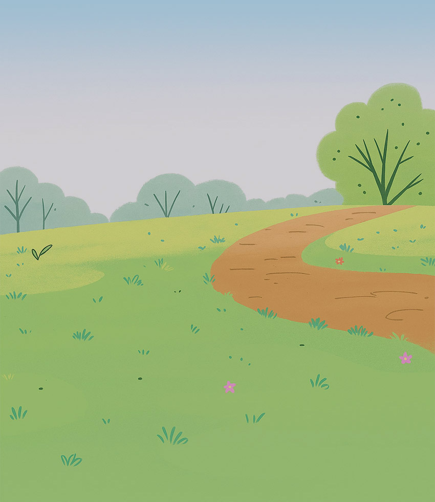

Jim Henson + CBC Kids / Dotopedia
Turning a fictional encyclopedia app into a real product for young explorers.
In Dot., the main character uses a fictional app to understand the world around her. Dotopedia brought that idea into a kid-safe, tablet-first product where children could explore articles, complete activities, and build their own small encyclopedia.
I led UX from concept through product design, working with The Jim Henson Company, CBC Kids, Industrial Brothers, engineering, and the production team around the show.


The design problem was making contribution feel natural to a kid who is still learning how information works.
The problem was not making Wikipedia smaller.
Dotopedia needed some of the logic of a wiki: browse, learn, save, and contribute. The audience changed the design problem completely. Many users were still learning to read, and the product needed to feel open without becoming a blank canvas.
That meant designing structure, not just screens. The app needed clear paths, audio support, visual cues, safe creation tools, and enough repetition that young users could build confidence without being walked through every action.
My role was to make the concept workable.
I shaped the experience from early product thinking through front-end design. The core work was turning a show concept into flows that were understandable to kids, feasible for engineering, and still true to Dot's relationship with nature and curiosity.
The details mattered: navigation, article structure, activity flows, creation steps, profile behavior, feedback states, and the short pieces of instruction that help a child know what they can do next.

What I was responsible for
- Led conceptual UX for the app experience
- Developed end-to-end flows for core product concepts
- Designed major app screens and interaction patterns
- Presented concepts to a large stakeholder group
- Managed my own workstreams inside the broader production effort
- Worked with engineering to bring the product to market
Public launch features included
More than 200 articles, games and activities, stickers and Rangeroo Badges, article creation with photos, sound and text, multiple profiles, and a walled-garden model with no social sharing.
A kids' wiki is really a system of permissions.
For an adult, a wiki is mostly about access: search, browse, edit. For a child, the questions are more basic. What can I touch? What happens if I make something? Will I break it? Is this mine?
Those questions shaped the UX. The product had to make contribution feel possible while keeping the experience contained, predictable, and safe.
The product needed to connect screen activity back to the world.
Dotopedia worked best when the screen was not the whole experience. Kids could explore existing articles, unlock new content through play, and add their own photos, sounds, and notes.
The structure did a quiet job: open enough to feel personal, but contained enough to feel safe. That balance was the main design constraint.
What We Shipped
Dotopedia launched as a tablet-first companion app with a mobile version as well. The product was recognized across children's media and interactive design programs.
- Shipped a free iOS and Android app connected to the Dot. franchise
- Won the Youth Media Alliance Award of Excellence for Best Cross-platform Interactive Content
- Won a W3 Award for Mobile Apps/Sites - Education
- Received nominations from Kidscreen, the Canadian Screen Awards, and the BANFF Rockie Awards